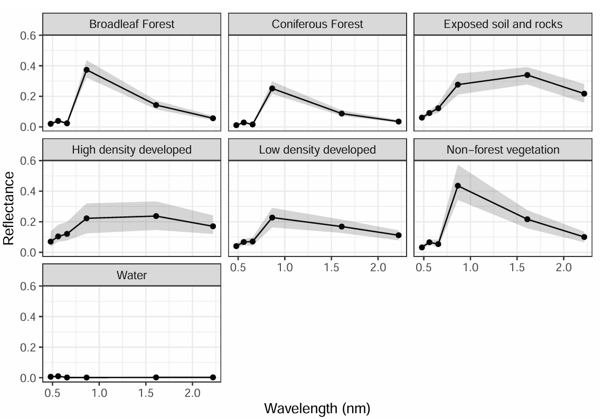

波段组合与光谱分析
高光谱分类结果

基于 SAM 光谱角填图算法的地物分类结果（ENVI）
项目描述
- 使用 ASD FieldSpec Pro 地物光谱仪现场采集 5 类典型地物（健康阔叶/针叶植被、枯死植被、土壤、岩石）反射光谱，通过 ViewSpecPro 完成暗/白校准与多次重复测量平均
- 计算植被光谱指数 PRI、SIPI、ND705，比较健康与枯死植被在可见光/近红外/短波红外波段的光谱差异
- 处理 BC 省 Gulf Islands 地区 AISA 机载高光谱数据（411 波段，430–2400nm）
- 在 ENVI 中基于 14 类 ASD 实测光谱构建自定义光谱库，提取并比较影像像元光谱曲线与野外实测光谱库数据
- 应用光谱角填图（Spectral Angle Mapper, SAM）分类算法完成地物分类，理解其 N 维空间向量夹角几何原理及对光照不敏感的特性
- 基于线性光谱混合模型（Linear Spectral Mixture）模拟混合像元光谱曲线，模拟 Landsat ETM+ 多光谱波段响应，计算 NDVI、NDWI 指数
- 另使用 eCognition Developer 10.x 完成面向对象影像分析（OBIA）：融合 RGB 影像与 CHM 栅格，应用多尺度分割算法，使用 SVM 分类器完成水体、采伐迹地、幼龄林、成熟林四类地物的监督分类
ENVI
SAM 光谱角填图
高光谱 411 波段
ASD FieldSpec Pro
eCognition
OBIA
SVM 分类器
PRI · SIPI · ND705
线性光谱混合模型